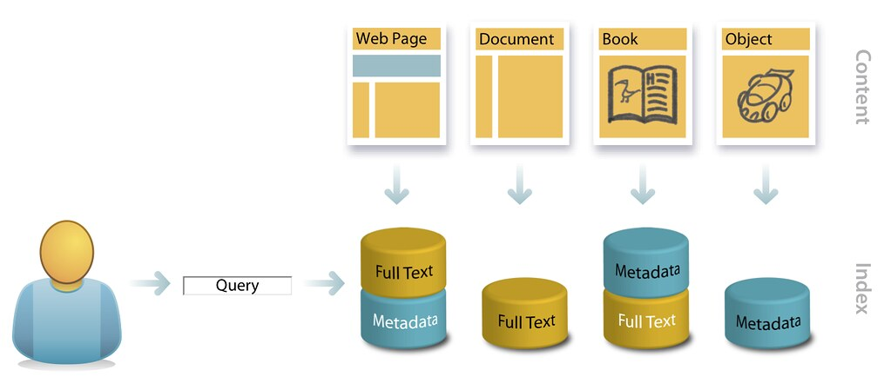

Resources
In Conclusion
DCAT a Web Standard that has proven to be a valueable resource to many entities.
It made useful by government agencies, websites, search engines and more. Data is
an important component to businesses and organizations, it helps to solve problems
and make informed decisions.
Citations
- “Data Catalog Vocabulary (DCAT) - Version 3.” W3C, www.w3.org/TR/vocab-dcat-3/ 3 May 2025.
- DCAT-US Schema V1.1 (Project Open Data Metadata Schema), resources.data.gov/resources/dcat-us/. Accessed 3 May 2025.
- “The FAIR Guiding Principles for Scientific Data Management and Stewardship.” Nature, www.nature.com/articles/sdata201618 Accessed 4 May 2025.
- “Fair Principles.” GO FAIR, 21 Jan. 2022, www.go-fair.org/fair-principles/." Accessed 4 May 2025.
- DCAT for Beginners | OER Commons, oercommons.org/courseware/lesson/94736/overview Accessed 4 May 2025.
- “Simple Dcat Export.” Drupal.Org, 4 May 2015, www.drupal.org/project/sdcate
- ALEKSANDROVA, Zhenya. “DCAT Application Profile for Data Portals in Europe.” ISA2 - European Commission, 3 Apr. 2020, ec.europa.eu/isa2/solutions/dcat-application-profile-data-portals-europe_en/.